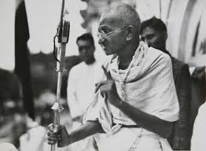
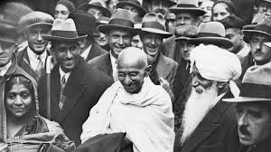
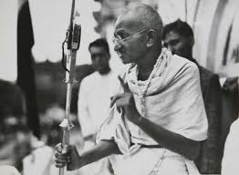
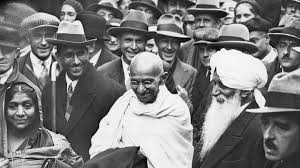

Mahatma Gandhi
 



A Warrior, Prophet and a Saint
"Like most people, I had heard of Gandhi, but I had never studied him seriously. As I read I became deeply fascinated by his campaigns of nonviolent resistance.... The whole concept of Satyagraha was profoundly significant to me."
“Gandhi was probably the first person in history to lift the love ethic of Jesus above mere interaction between individuals to a powerful and effective social force on a large scale. The intellectual and moral satisfaction that I failed to gain from the utilitarianism of Bentham and Mill, the revolutionary methods of Marx and Lenin, the social contract theory of Hobbes, the 'back to nature' optimism of Rousseau, and the superman philosophy of Nietzsche, I found in the non-violent resistance philosophy of Gandhi.”
“If humanity is to progress, Gandhi is inescapable. He lived, thought, and acted, inspired by the vision of humanity evolving toward a world of peace and harmony. We may ignore him at our own risk.”
“Gandhi resisted evil with as much vigor and power as the violent resister, but he resisted with love instead of hate. True pacifism is not unrealistic submission to evil power. It is rather a courageous confrontation of evil by the power of love.”
-Dr. Martin Luther King, Jr.